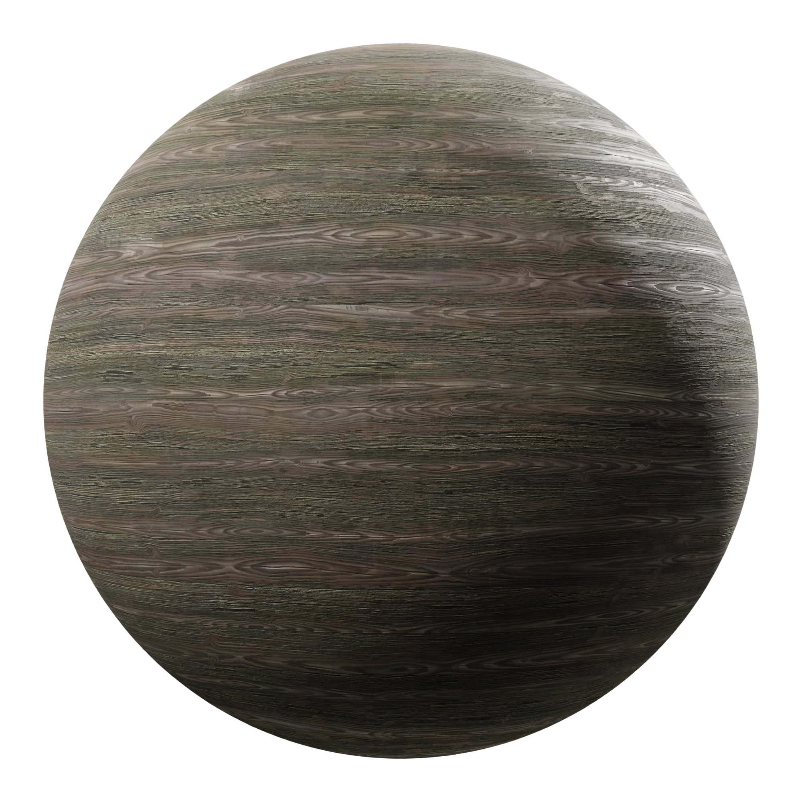
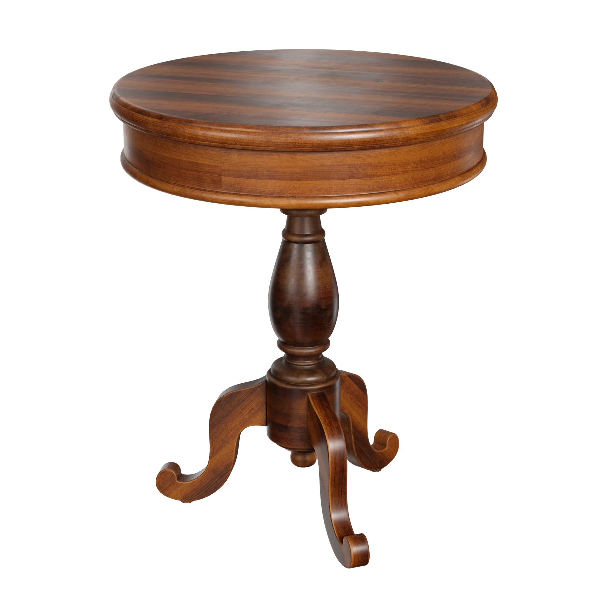

Gelişmiş doku tekniği.
Ultra tecrübeli. Ultra güvenilir.

Fikirleriniz gerçeklikle uyum sağlar.
Ürün oluşturabilir ve ürününüzü renklendirebilirsiniz.

₺999
Oturma Alanı: Yaklaşık 0,20 m² alan kaplar.
Sırt Alanı: Yaklaşık 0,30–0,40 m² alan kaplar.
Ayaklar ve İskelet: Yaklaşık 0,70–1,20 m² alan kaplar.
Akrilik Boya: Su ile incelir, kokusu azdır, çabuk kurur ve ahşap yüzeylere çok iyi tutunur.
Tebeşir Boyası: Mat bir görünüm verir, eski/eskitme tarzı projeler için uygundur ve genellikle zımpara gerektirmez.
Sentetik (Yağlı) Boya: Tinerle incelir, çok sağlam bir katman oluşturur ancak kuruma süresi uzundur.
Poliüretan / Çok Amaçlı Hibrit Boyalar: Çizilmeye ve darbelere karşı ekstra güçlü direnç gösteren yeni nesil boyalardır.
₺2999
4 Kişilik Kare Masa: 90 x 90 cm ölçülerindedir ve yüzey alanı 0,81 m² kadardır.
4 Kişilik Dikdörtgen Masa: 120 x 80 cm ölçülerindedir ve yüzey alanı 0,96 m² kadardır.
6 Kişilik Dikdörtgen Masa: 160 x 90 cm veya 180 x 90 cm ölçülerindedir; yüzey alanı 1,44 m² ile 1,62 m² arasındadır.
6 Kişilik Yuvarlak Masa: 120 cm ila 150 cm çapındadır; yüzey alanı yaklaşık 1,13 m² ile 1,77 m² arasındadır.
Multisurface (Çok Yüzeyli) Akrilik Boya: Ahşap, MDF ve suntalam masalara çok iyi tutunur, kokusuzdur, su bazlıdır.
Poliüretan Takviyeli / Hibrit Boya: Çizilmeye ve darbelere karşı dirençlidir, masa yüzeyi için uzun ömürlüdür.
Sentetik (Yağlı) Boya: Tinerle inceltilen, parlak ve sert bir katman oluşturan geleneksel boya türüdür.
Ahşap Verniği / Yat Verniği: Boya altı koruma veya ham ahşap dokusunu koruyarak parlaklık vermek için kullanılır.
₺8999
Gardırop: Genişlik: 150–240 cm, Yükseklik: 200–220 cm. Ön kapak yüzey alanı ortalama 3 m² - 5 m²
Mutfak Dolabı (Alt + Üst): Alt dolap tezgah hariç yükseklik 85 cm, derinlik 60 cm. Üst dolap yükseklik 72 cm, derinlik 35 cm. Ön kapak ve görünen cephe alanı ortalama 4 m² - 6 m²
Banyo / Antre Dolabı: Genişlik: 60–100 cm, Yükseklik: 180–200 cm. Ön yüzey alanı ortalama 1.5 m² - 2.5 m².
Su Bazlı Akrilik Boya: Su ile incelir, kokusuzdur, hızlı kurur ve ahşap/MDF yüzeylere çok uygundur.
Tebeşir Efektli Boya: Mat ve eskitme tarzlar için idealdir, bazı türleri astar veya derin zımpara istemez.
Hibrit / Çok Yüzeyli Boya: Plastik, ahşap, cam veya mermer gibi farklı kaplamalara güçlü şekilde tutunabilen, soyulmaya dirençli yeni nesil boyalardır.
Sentetik / Yağlı Boya: Tinerle inceltilen, çok sert ve dayanıklı bir katman oluşturan ancak geç kuruyan ve yoğun kokusu olan boyalardır.